| gender | doc_year | doc_month | age_type | name_type | verdict |
|---|---|---|---|---|---|
| female | 1761 | Aug | adult | named | suicide |
| male | 1765 | Jul | adult | named | suicide |
| male | 1766 | Sep | adult | named | suicide |
| male | 1770 | Sep | adult | named | natural causes |
| male | 1772 | Jun | adult | named | accidental |
| male | 1776 | Apr | adult | named | suicide |
| male | 1777 | Aug | adult | unnamed | undetermined |
| female | 1788 | Mar | adult | named | natural causes |
| male | 1794 | Sep | adult | named | homicide |
| female | 1795 | Aug | adult | named | natural causes |
Westminster Coroners Inquests 1760-1799, Part 1
LL
death
Introduction
This will be a post in two parts about data relating to the series of Westminster Coroner’s Inquests on London Lives, which cover the period 1760-1799.
The main purpose of the coroner in England, from the establishment of the office in the early middle ages, has been to investigate sudden, unnatural or suspicious deaths, and the deaths of prisoners. In the 18th century, the coroner didn’t have to have medical or legal qualifications, and he was often a substantial local gentleman.
Only about 1 per cent of all deaths were considered suspicious enough to warrant an inquest. Inquests were usually held within a few days of the death, and conducted at a local alehouse, parish workhouse or in the building in which the death occurred.
The data
The dataset I’ve created contains a wealth of data that can be explored and visualised, including gender of the deceased, locations, dates and verdicts. There are two components to the data:
Summary data (in a .tsv file) from the inquests, which includes the inquest date and parish, deceased name if known, verdict, cause of death, if the deceased is a child or a prisoner, and London Lives references.
Plain text files of the inquisitions, the formal legal record of the inquest’s findings and verdict. (They are often called “inquests”, but I’m using the longer term here to avoid confusion between the document and the event.) They were extracted from the original XML files, using the Python library BeautifulSoup. (A very few inquests don’t have inquisition texts; this can be because the document doesn’t seem to have survived, because the image for it is missing, or because it wasn’t transcribed for some other reason.)
The inquest records are actually bundles of various documents; apart from the inquisition, they can include jury lists and verdicts, witness statements, warrants, letters. Nearly all of the information in the summary data has been taken directly from the inquisitions and (in some cases) from verdicts.
The data, with detailed documentation, can be found here.
For this post, I did a bit of preparatory work on the summary data:
- add a “name type” column (named/unnamed deceased)
- add an “age type” (adult/child) (“child” simply means that the deceased was described as a child or infant in the documents)
- exclude a small number of inquests in which there is more than one deceased or gender is unknown
- simplified verdicts slightly (the original data has two types of suicide) and take out a few cases for which the verdict is unknown (not the same as an “undetermined” verdict; that means the jury couldn’t decide)
- extracted year and month from the inquest dates into separate columns
The original dataset contained 2894 inquests; after cleaning, there are 2885 (1 inquest = 1 person). Of these, 361 were children and in 356 cases, the deceased was unnamed. 2881 have inquisitions.
Here’s a random slice of the summary data.
And here’s a sample inquisition text:
| City and Liberty of Westminster , In the County of Middlesex ,} to wit, An Inquisition Indented, taken for our Sovereign Lord the King, at the House of Richd. Tyler Chapel Street oxford Street Parish of Saint Anne Soho within the Liberty of the Dean and Chapter of the Collegiate Church of St. Peter, Westminster , in the County of Middlesex , the twentieth day of February 1797 in the thirty Seventh Year of the Reign of our Sovereign Lord GEORGE the Third, by the Grace of God, of Great-Britain, France, and Ireland King, Defender of the Faith, and so forth, before Anthony Gell , Esq. Coroner of our said Lord the King for the said City and Liberty, on View of the Body of Humphris Jones then and there lying dead, upon the Oath of the several Jurors whose Names are here under written, and Seals affixed, good and lawful Men of the said Liberty, duly chosen, who being then and there duly sworn and charged to enquire for our said Lord the King, when, how, and by what Means the Said Humphris Jones came to his Death, do upon their Oath say that, the Said Humphis Jones, on the nineteenth day of February in the Year aforesaid in Oxford Street Street in the County of Middlesex died, by the Visitation of God in a natural Way To Wit of an Apoplexey of god and not otherwise IN WITNESS whereof, as well the said Coroner as the said Jurors, have to this Inquisition set their Hands and Seals the Day, Year, and Place first above written. Anthy. Gell Coroner } Wm Daviesford John Hamstead Willm Hall Wim Webster John Bell Jas Cragg Thos Gibson W Knightlie George John Yare Joseph Wm Walker (WACWIC652370118) |
Annual and seasonal patterns
There was a lot of variation in the numbers of inquests from one year to the next, although I think. As London’s population was growing rapidly during the 18th century, you would expect inquests to increase; the clear dip in the 1770s and early 1780s, however, is more unexpected.
It could mean that the assumptions I’ve been making about the survival of these inquest records need investigation. However, Craig Spence’s study of “sudden violent deaths” in London 1650-1750, using different sources, also found considerable fluctuations in numbers.
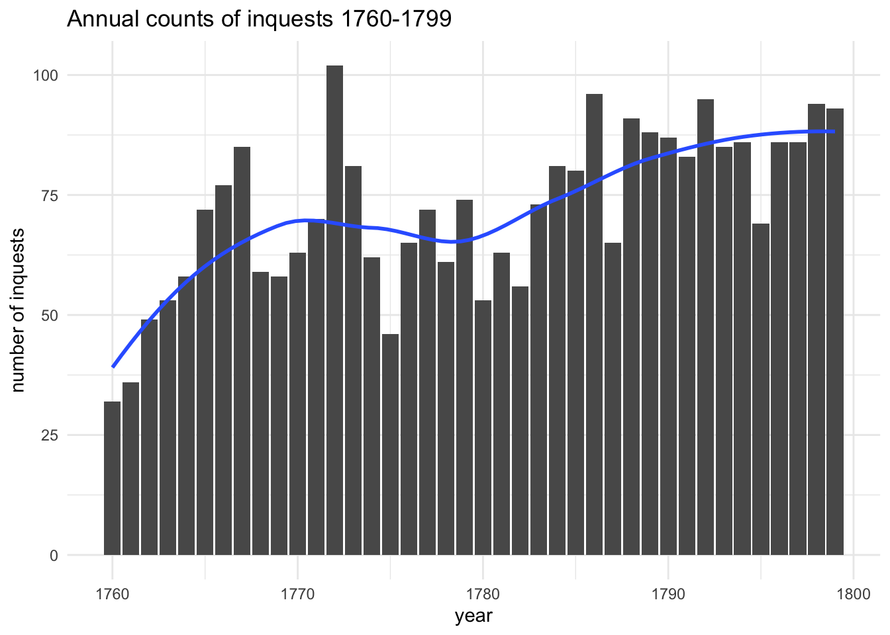
Looking at seasonal patterns, it should be borne in mind that the dates are for inquests rather than the actual deaths, but normally an inquest would be held within a few days, so it should be mostly accurate.
The seasonal variations are quite interesting: the numbers are clearly largest between May and August, but there’s a second smaller peak from December to January. These patterns actually underline the fact that the deaths recorded in coroners’ inquests are not “normal” deaths. Burial records for late 18th-century London show a completely different seasonal pattern, with far more deaths between October and March than during the summer months. Inquests can only tell us about a particular subset of deaths - violent or accidental, sudden or “suspicious” (and the deaths of prisoners in custody, not necessarily a typical group) - and not deaths from disease, illness or, for women, childbirth.
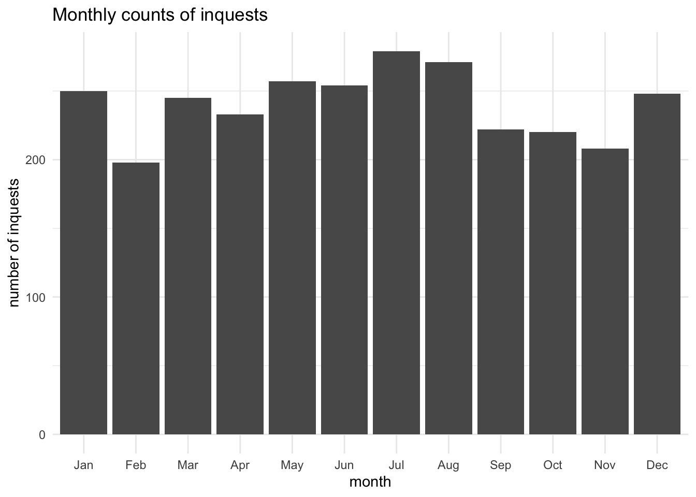
The deceased
As the monthly graph above has already indicated, the majority of the deceased were male. Overall, 72.6% of the deceased are male. Clearly, men were much more likely to die in circumstances that could lead to an inquest.
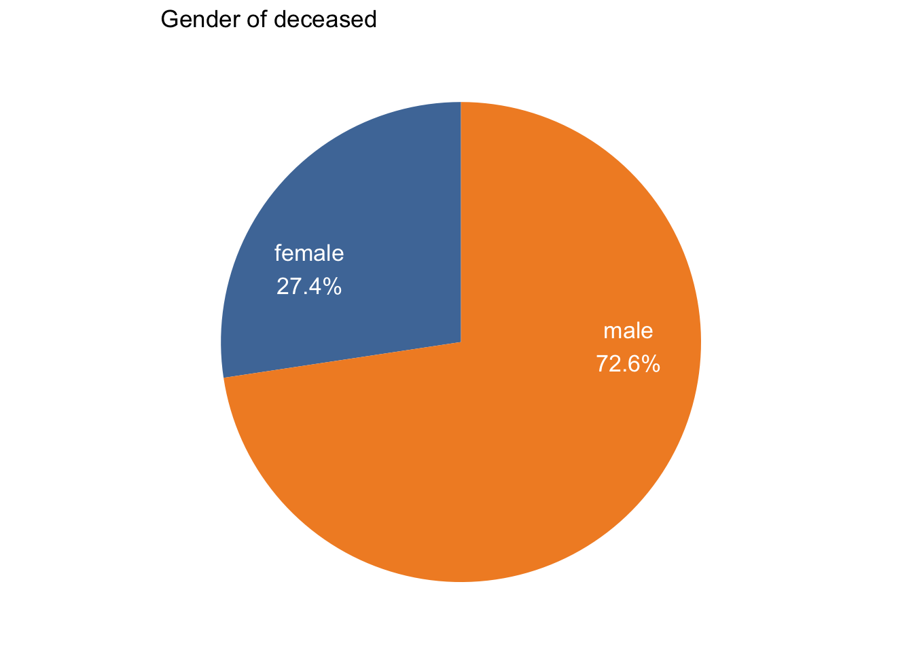
But if we break this down by age type and compare adults and children, we can see that the gender ratio for children is much more evenly balanced; 55.1% of the children are male, compared to 75.1% of adults.
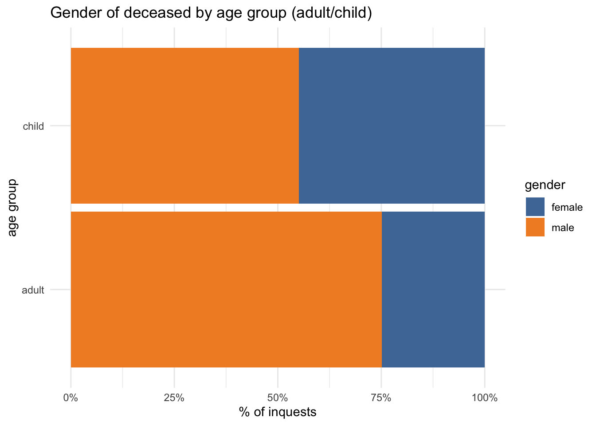
It’s clear from a brief reading of some inquests on children that 18th-century London was a dangerous place for them. But it may well have been dangerous in a less gendered way than it was for adults. Men were more likely than women to work out of doors in dangerous manual trades, they were more likely to get into brawls, and perhaps more generally to indulge in risky behaviour. Again, closer examination of causes of death, as well as textmining of inquisitions, may well enable more in-depth exploration of this topic.
I want to throw one more variable into the mix: whether the deceased was named or not. There are quite different reasons for adults and children to be nameless in inquests. Unnamed adults were strangers to the locals and officials concerned with the inquest, quite possibly vagrants or poor migrants, whereas the vast majority of nameless children were abandoned new-born infants - suspected victims of infanticide.
Visualising this with a “faceted” bar chart, shows that only a small proportion of adults were anonymous compared to children. In both the adult and child groups, however, a substantially higher proportion of anonymous deceased were female. This seems quite odd. Is it just a coincidence, given how different the contexts were for adult and child namelessness?
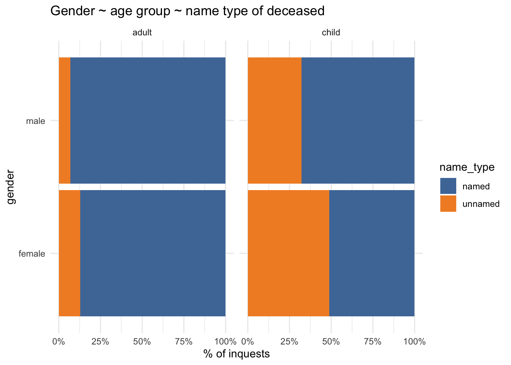
Verdicts
There are some issues with the verdict categories in the data at present. They aren’t perfectly reliable; they’ve been identified primarily by keywords in documents, but may need further verification. Secondly, the verdicts are very broadly defined; “natural causes” includes “visitation of god” (the majority) and “natural” deaths blamed on other causes (eg the result of “want”). More detailed information on cause of death isn’t at present consistent/reliable enough to analyse. So the following section is all a bit provisional.
First, a look at the overall verdict proportions. Accidents are in the majority, followed by suicides and natural causes. Homicides are a small minority.
| verdict | n | percent |
|---|---|---|
| accidental | 1193 | 41.35 |
| suicide | 700 | 24.26 |
| natural causes | 682 | 23.64 |
| undetermined | 179 | 6.20 |
| homicide | 131 | 4.54 |
Year on year, verdict proportions can vary considerably, and it’s difficult to see any trends. However, broken down by decade, some patterns do appear: the proportion of verdicts that are of natural causes increases substantially; the share of accidents peaks in the 1770s and then falls back to much the same level as in the 1760s; homicides and suicides also decrease.
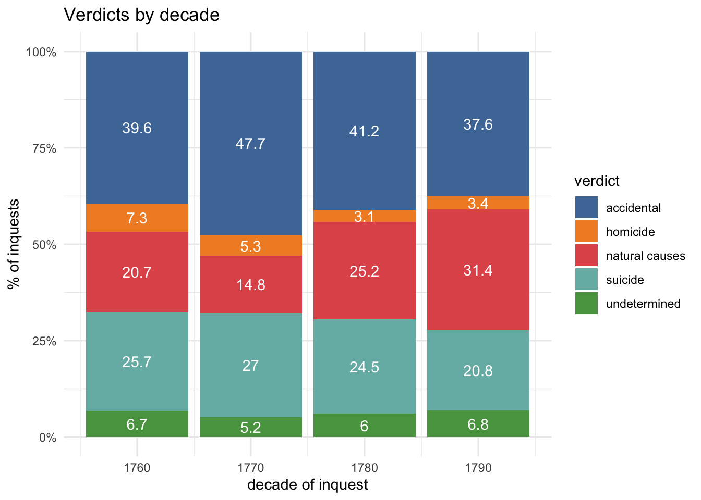
Let’s look at the monthly patterns by verdict. The proportion of accidental deaths peaks from June to September, which almost - though not quite - overlaps with the peak inquest months of May to August. On the other hand, the proportion of deaths from natural causes is at its highest (and from accidents at its lowest) in December-January.
Possible explanations for this? The summer months were the time of year when people were most likely to be working and playing outdoors (including, for example, swimming in the River Thames) and so they could well have been more exposed to more risks. (Bearing in mind that homes and indoor workplaces contained their own dangers, of course!) Meanwhile, I think it’s possible that many of the December-January ‘natural causes’ deaths may turn out to be strangers who had been found dead of cold and “want”. These are clearly topics for further exploration.
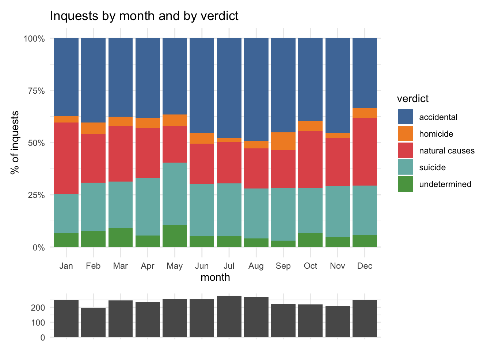
A breakdown of the monthly patterns by gender shows that the proportion of male deaths also peaked between June and August, and was at its lowest in January.
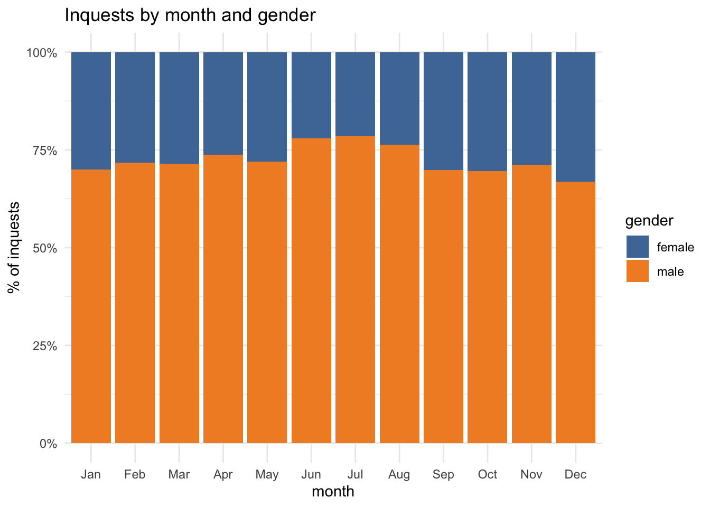
And so it’s no surprise to have confirmation that men were considerably more likely than women to have died in accidents. A more curious feature at first sight, however, is that female deceased were more likely than men to be victims of homicide, since in court records most killings were male-on-male. The difference here is almost certainly due to the presence of new-born infants (whose gender is not usually systematically analysed in infanticide studes).
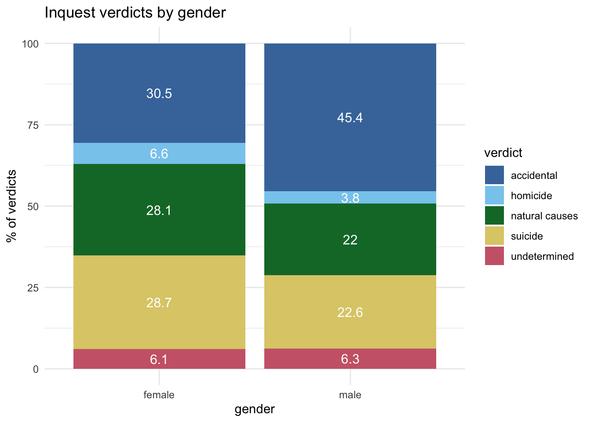
Counting words
Part 2 will explore the inquisition texts in more depth, but I want to do some basic textmining first. That means, essentially, counting words, which can be a lot more informative than you might think.
To start with some basic stats for the full documents (without any stopwords applied). The 2881 documents contain 1160663 words in total, with 18595 unique words.
The average (mean) length of each document is 402.87 words.
The distribution of word counts is interesting: this histogram of word counts per document shows that it’s what’s called a bimodal distribution - that is, it has two peaks. So, intriguingly, there are two clusters of inquisitions by document length: short documents that are less than about 300 words in length, and a larger group of longer documents. The second peak, additionally, has a “positive (right-hand) skew” (or long tail). What’s happening here?
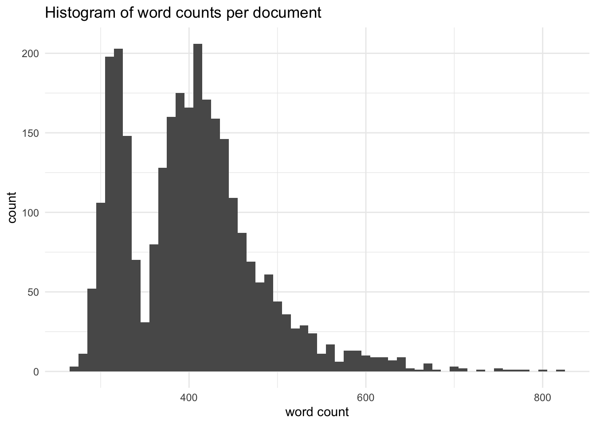
One possible reason for that to happen would be some kind of sudden administrative/legal change that resulted in a change in the format of docuemnts. But this scatterplot shows that isn’t the case. The bimodal pattern becomes consistent from around 1770 with a very clear gap between the “short” and “long” documents in most years. You can see that the dots become denser (especially, perhaps, in the shorter group?), reflecting the growing numbers of inquests. (This will probably be worth further analysis by decade.) However, there are no sudden changes or obvious big trends; document lengths overall don’t appear to change much.
This stability seems worth noting because (in a broader context of social and legal change, population growth, etc, in London in the later 18th century) change rather than continuity has been a striking feature of other text datasets for this period that I’ve worked with. Old Bailey Online trials, for example, get longer and more detailed in the second half of the century, though there is also much more variation in length among trial reports. Petitions to Quarter Sessions also vary much more in length than these texts do, ranging from less than 100 words to a few thousand, yet with a shorter average length than the inquisitions. So, on just this one measure, the inquisitions already have some quite distinctive and interesting characteristics.
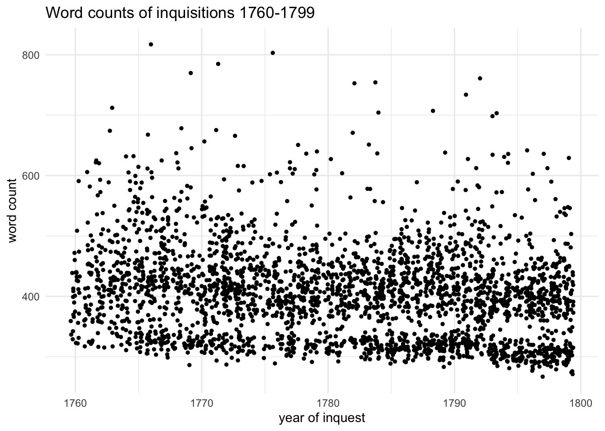
On repeating the scatterplot with a breakdown by verdict, the cause of the bimodal pattern becomes immediately much clearer. The short inquisitions are almost entirely verdicts of natural causes or undetermined; the longest documents are mostly homicides, with accidents and suicides in the middle.
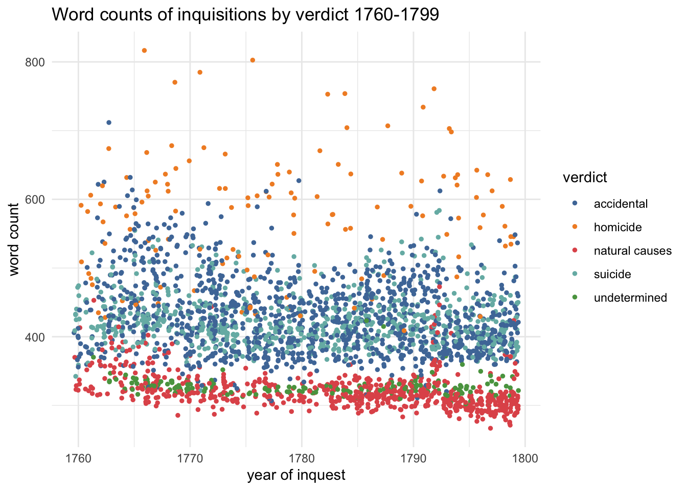
Faceting the plot shows a few things that were slightly obscured above: homicide inquisitions, even though they’re the smallest group numerically, are by far the most varied in length. Both accidental and natural verdicts inquisitions appear to become more homogenous in length and the trend line shows that they get a bit shorter. (That sudden big spike in the length of natural causes in the early 1790s is so odd that I’m inclined to suspect it’s an error in the data; I’ll investigate later…)
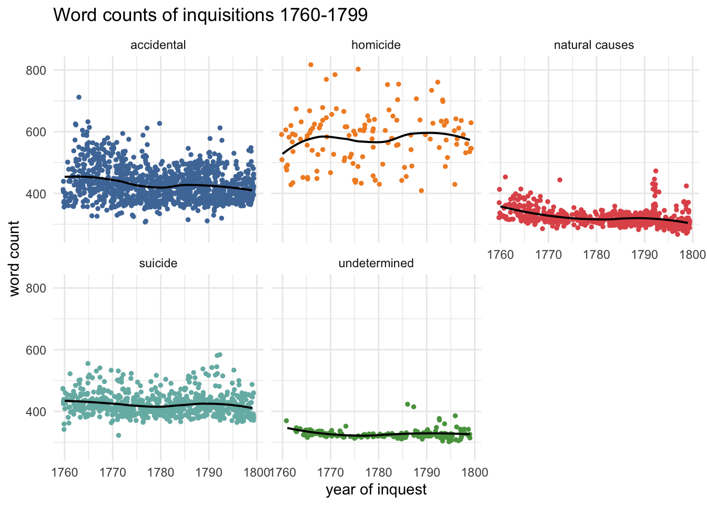
Concluding thoughts
This exploratory quantitative analysis has raised some areas of interest for more detailed investigation in subsequent research (in addition to needing to do some work on improving the data):
- the gendering of different kinds of sudden/violent death
- the significance of the added dimension of age groups
- changes over time and seasonal patterns
I’ll also want to do some case studies on inquests on “strangers” and (a group not mentioned at all yet) prisoners - the latter are likely to have some distinct characteristics.
In part this will involve some old-fashioned close reading, but I’m also going to experiment with distant reading methods, and in part 2 I’m going to try out more textmining of the inquisitions texts, focusing in particular on comparing texts by verdicts.
Further resources and reading
Westminster Coroners’ Inquests Data
London Lives Coroners’ Inquests
“The coroner frequents more public-houses than any man alive”
Craig Spence, Accidents and Violent Death in Early Modern London, 1650-1750 (Boydell & Brewer, 2016)
John Landers and Anastasia Mouzas, ‘Burial Seasonality and Causes of Death in London 1670–1819’, Population Studies, 42 (1988), 59–83